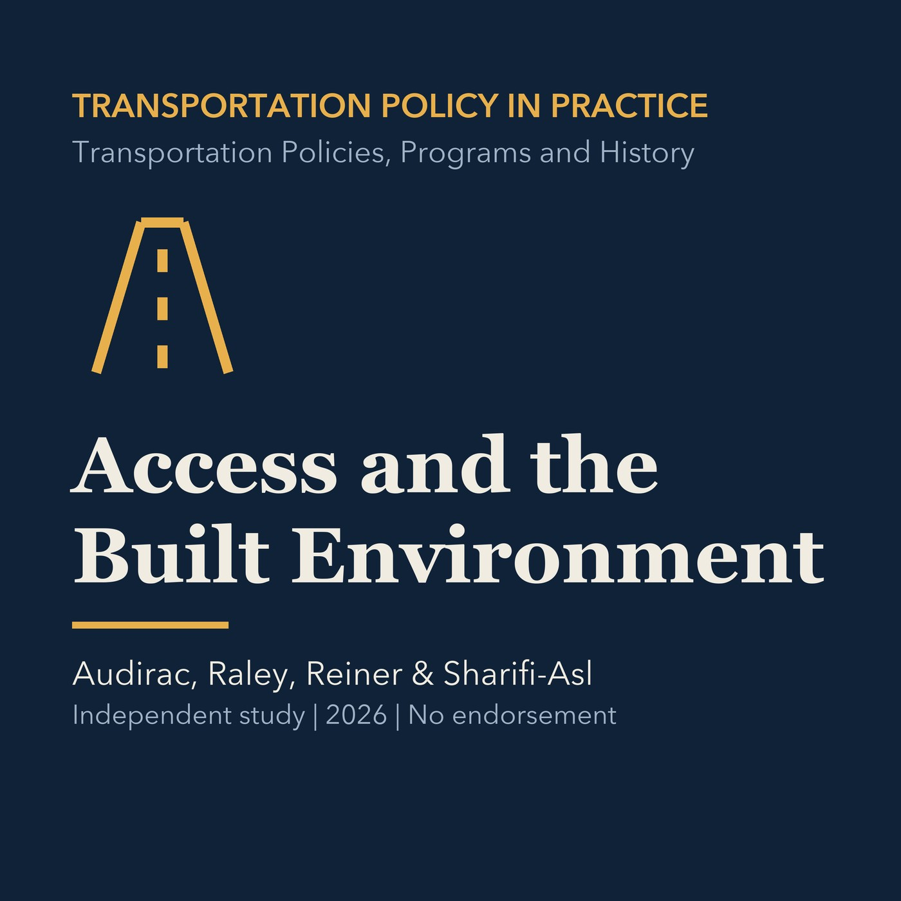

EPISODE 06
Accessibility and the Built Environment
Examines the transportation and land-use feedback loop and the shift from speed toward access, followed by a Torrance application.

- Stable GUID
531d00ad-4829-51da-95e2-1d6a54b259f1- Release
- transportation-policies-programs-history-v2026.3
- SHA-256
1927ac20a84e196d59561a971ed544d6e896415a8905bf568a07af1de9625fc6